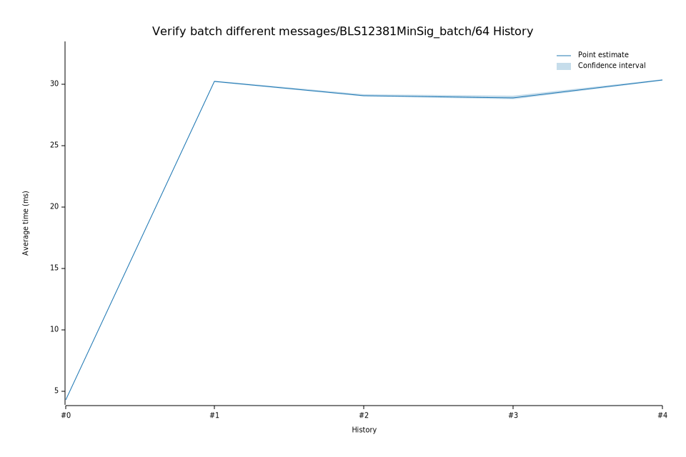

# 32023-02-08T19:02:28Z
|
Lower Bound |
Estimate |
Upper Bound |
| Value: |
28.76ms |
28.90ms |
29.04ms |
| Change in Value: |
-1.3063% |
-0.7994% |
-0.3105% |
No change in performance detected.
# 22022-12-05T08:50:54Z
|
Lower Bound |
Estimate |
Upper Bound |
| Value: |
29.00ms |
29.09ms |
29.17ms |
| Change in Value: |
-4.2145% |
-3.8232% |
-3.4296% |
No change in performance detected.
# 12022-11-14T12:06:03Z
|
Lower Bound |
Estimate |
Upper Bound |
| Value: |
30.20ms |
30.24ms |
30.27ms |
| Change in Value: |
+600.82% |
+604.82% |
+608.49% |
No change in performance detected.
# 02022-11-04T13:44:13Z
|
Lower Bound |
Estimate |
Upper Bound |
| Value: |
4.27ms |
4.29ms |
4.31ms |